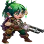

Guia de Todos os Talismãs do Hero Wars Alliance
- Por: Alexandre Domingos. .
Os talismãs são um dos maiores saltos de poder em Hero Wars Alliance, mas a dúvida mais difícil para a maioria dos jogadores não é apenas onde consegui-los. A verdadeira pergunta é esta: quando um herói tem dois talismãs, em qual deles você deve focar primeiro?
Este guia agora foca principalmente em ajudar iniciantes a decidir entre Talismã 1 e Talismã 2 para cada herói. Depois disso, também explicamos de onde vêm os talismãs hoje, incluindo Talisman Fever, Loja dos Guardiões e a Loja Frontier, para que você consiga alinhar sua lista de prioridades com a rotação mensal atual.

Índice
O Que os Talismãs Fazem
Um talismã é um item especial ligado a um herói específico. Quando equipado, ele muda os atributos desse herói e pode alterar completamente como ele se comporta na batalha. Para muitos heróis, um talismã não é uma melhoria pequena. É um grande passo que pode deixar o herói mais rápido, mais resistente, mais forte ou mais útil em uma função específica.
Alguns heróis têm mais de um talismã, mas você só pode equipar um por vez. Isso significa que escolher o talismã certo faz diferença. Uma versão pode ser melhor para ataque, enquanto outra pode funcionar melhor na defesa, na Arena ou em uma composição específica.
Se você é iniciante, não se preocupe em coletar todos os talismãs do jogo. Isso não é realista no começo. Seu primeiro objetivo deve ser simples: conseguir um talismã para um herói que você já usa todos os dias e entender como funcionam os materiais de evolução.
Dicas do Alexandre: Uma dúvida muito comum de iniciantes é achar que um talismã funciona como uma skin, mas são sistemas diferentes. Quando você evolui uma skin, o herói mantém esses atributos permanentemente, e trocar para outra skin depois muda apenas a aparência visual na batalha. O talismã não funciona assim: os atributos ativos mudam de acordo com o talismã equipado, então trocar de um talismã para outro pode mudar imediatamente a build e a função do herói.
Guia de Todos os Talismãs: Qual Talismã é Melhor?
A tabela abaixo é a forma mais rápida de decidir em que focar para cada herói. Se a última coluna mostrar 1º, o primeiro talismã geralmente é o melhor investimento no longo prazo. Se mostrar 2º, o segundo talismã costuma ser a escolha mais forte. Quando a recomendação depende do modo de jogo, isso está indicado diretamente na tabela.
Se a coluna do segundo talismã estiver vazia, isso normalmente significa que o herói só tem um talismã relevante listado por enquanto. Para iniciantes, esta tabela deve ser tratada como um guia de prioridade, não como uma regra que substitui o contexto do time, mas ela é o melhor ponto de partida quando os recursos são limitados.
| Herói | Talismã 1 | Talismã 2 | Qual é o Melhor |
|---|---|---|---|
 Aidan Aidan | Inteligência & Ataque Mágico | Dureza & Saúde | 1º |
 Alvanor Alvanor | Inteligência & Saúde | Crítico Mágico & Armadura | 1º |
 Amira Amira | Inteligência & Saúde | Armadura & Crítico Mágico | 2º |
 Andvari Andvari | Força & Saúde | Reflexão Mágica & Ataque Físico | 1º |
 Arachne Arachne | Inteligência & Ataque Mágico | Crítico Mágico & Penetração Mágica | 2º |
 Artemis Artemis | Agilidade & Ataque Físico | Acerto Crítico & Armadura | 2º |
 Astaroth Astaroth | Força & Defesa Mágica | Saúde & Armadura | 2º |
 Astrid | Agilidade & Penetração de Armadura | Ataque Físico & Acerto Crítico | 1º |
 Aurora Aurora | Força & Esquiva | Ataque Mágico & Penetração Mágica | 1º |
 Byrna Byrna | Inteligência & Penetração Mágica | Armadura & Reflexão Mágica | 1º |
 Dilúvio Dilúvio | Agilidade & Ataque Físico | Saúde & Armadura | 1º |
 Celeste Celeste | Inteligência & Armadura | Saúde & Ataque Mágico | 2º |
 Chabba Chabba | Força & Saúde | Defesa Mágica & Armadura | 1º |
 Machadinha Machadinha | Força & Saúde | Acerto Crítico & Dureza | 1º |
 Cornelius Cornelius | Inteligência & Ataque Mágico | Saúde & Penetração de Armadura | 2º |
 Corvus Corvus | Força & Ataque Físico | Defesa Mágica & Armadura | 2º |
 Dante Dante | Agilidade & Acerto Crítico | Ataque Físico & Esquiva | 2º |
 Danada Danada | Agilidade & Penetração de Armadura | Penetração de Armadura & Ataque Físico | 2º |
 Estrela Sombria Estrela Sombria | Agilidade & Ataque Físico | Acerto Crítico & Penetração de Armadura | 2º |
 Dorian Dorian | Inteligência & Penetração Mágica | Armadura & Saúde | 2º |
 Drayne Drayne | Força & Ataque Físico | Penetração de Armadura & Esmagamento | 1º |
 Electra Electra | Força & Dureza | Reflexão Mágica & Ataque Mágico | 2º |
 Elmir Elmir | Agilidade & Ataque Físico | Esquiva & Saúde | 2º |
 Sem Rosto Sem Rosto | Inteligência & Saúde | Armadura & Ataque Mágico | 1º |
 Fafnir Fafnir | Força & Ataque Físico | Ataque Físico & Armadura | 1º |
 Folio Folio | Inteligência & Ataque Mágico | Armadura & Dureza | 2º |
 Fox Fox | Agilidade & Ataque Físico | Acerto Crítico & Saúde | 1º |
 Galahad Galahad | Força & Acerto Crítico | Ataque Físico & Penetração de Armadura | 2º |
 Ginger Ginger | Agilidade & Penetração de Armadura | Acerto Crítico & Acerto Crítico | 2º |
 Guus Guus | Força & Acerto Crítico | Armadura & Ataque Físico | 2º |
 Heidi Heidi | Inteligência & Armadura | Esquiva & Ataque Mágico | 2º |
 Helios Helios | Inteligência & Penetração Mágica | Crítico Mágico & Ataque Mágico | 2º |
 Iris Iris | Inteligência & Defesa Mágica | Armadura & Penetração Mágica | 2º |
 Isaac Isaac | Agilidade & Ataque Físico | Dureza & Acerto Crítico | 2º |
 Ishmael Ishmael | Agilidade & Ataque Físico | Armadura & Acerto Crítico | 2º |
 Jet Jet | Inteligência & Ataque Mágico | Esquiva & Saúde | 1º |
 Jhu Jhu | Força & Acerto Crítico | Ataque Físico & Armadura | 2º |
 Jorgen Jorgen | Força & Defesa Mágica | Ataque Mágico & Armadura | 2º |
 Juiz Juiz | Inteligência & Ataque Mágico | Armadura & Penetração Mágica | 1º |
 Julius Julius | Força & Penetração de Armadura | Ataque Físico & Dureza | 2º |
 K'arkh K'arkh | Agilidade & Defesa Mágica | Ataque Físico & Vampirismo | 2º |
 Kai Kai | Inteligência & Ataque Mágico | Penetração Mágica & Armadura | 2º |
 Kayla Kayla | Agilidade & Ataque Físico | Penetração de Armadura & Acerto Crítico | 2º |
 Keira Keira | Agilidade & Ataque Físico | Saúde & Defesa Mágica | 1º |
 Kendle Kendle | Inteligência & Armadura | ||
 Krista Krista | Inteligência & Ataque Mágico | Saúde & Penetração Mágica | 2º |
 Lara Croft Lara Croft | Agilidade & Penetração de Armadura | ||
 Lars Lars | Inteligência & Ataque Mágico | Ataque Mágico & Armadura | 2º |
 Leonel Leonel | Agilidade & Saúde | ||
 Lian Lian | Inteligência & Ataque Mágico | Armadura & Saúde | 2º |
 Lilith Lilith | Força & Armadura | Saúde & Ataque Mágico | 2º |
 Luther Luther | Força & Saúde | Ataque Físico & Dureza | 1º |
 Markus Markus | Inteligência & Saúde | Armadura & Ataque Mágico | 2º |
 Martha Martha | Inteligência & Saúde | Ataque Mágico & Armadura | 1º |
 Maya Maya | Inteligência & Ataque Mágico | Armadura & Saúde | 1º |
 Miu Miu | Inteligência & Armadura | ||
 Mojo Mojo | Inteligência & Ataque Mágico | Armadura & Crítico Mágico | 2º |
 Morrigan Morrigan | Inteligência & Saúde | Armadura & Ataque Mágico | 1º |
 Mushy Mushy | Inteligência & Armadura | Crítico Mágico & Dureza | 1º para PvP, 2º para PvE |
 Nebula Nebula | Agilidade & Ataque Físico | Armadura & Esquiva | 1º |
 Ninja Turtles Ninja Turtles | Agility & Armor | ||
 Octavia Octavia | Agilidade & Saúde | Dureza & Ataque Físico | 1º |
 Orion Orion | Inteligência & Armadura | Dureza & Ataque Mágico | 2º |
 Oya Oya | Força & Acerto Crítico | Ataque Físico & Esmagamento | 2º |
 Peech Peech | Agilidade & Ataque Físico | Saúde & Acerto Crítico | 2º |
 Phobos Phobos | Inteligência & Ataque Mágico | Armadura & Saúde | 1º |
 Polaris Polaris | Inteligência & Crítico Mágico | Inteligência & Chance de Crítico Mágico | 2º |
 QingMao QingMao | Agilidade & Acerto Crítico | Saúde & Ataque Físico | 1º |
 Rufus Rufus | Força & Saúde | Armadura & Ataque Mágico | 2º |
 Satori Satori | Inteligência & Penetração Mágica | Armadura & Saúde | 1º para linha do meio, 2º para linha de frente |
 Sebastian Sebastian | Agilidade & Armadura | Ataque Físico & Acerto Crítico | 2º |
 Soleil Soleil | Inteligência & Armadura | Reflexão Mágica & Saúde | 2º |
 Somna Somna | Agilidade & Saúde | Dureza & Ataque Físico | 2º |
 Tempus Tempus | Inteligência & Armadura | Dureza & Saúde | 2º |
 Thea Thea | Inteligência & Ataque Mágico | Dureza & Saúde | 2º |
 Tristan Tristan | Força & Saúde | Armadura & Ataque Físico | 2º |
 Xe'sha Xe'sha | Inteligência & Ataque Mágico | Armadura & Penetração Mágica | 2º |
 Yasmine Yasmine | Agilidade & Acerto Crítico | Esquiva & Ataque Físico | 2º |
 Ziri Ziri | Força & Armadura | Saúde & Penetração de Armadura | 1º |
Onde Conseguir Talismãs Hoje
A forma mais confiável de conseguir talismãs hoje é o evento Talisman Fever. Dentro do evento, o lugar mais importante é a Loja dos Guardiões, onde você gasta Moedas de Talismã para comprar o talismã em destaque daquela rotação.

Este é o detalhe mais importante: os talismãs disponíveis no evento mudam conforme a rotação mensal. Então, mesmo que você saiba exatamente qual talismã quer, não há garantia de que ele aparecerá no próximo evento. Conforme mais talismãs são adicionados ao jogo, fica mais difícil prever quando um específico vai voltar.
Por esse motivo, iniciantes devem pensar em termos de oportunidade, não de perfeição. Se aparecer um talismã para um herói que você usa o tempo todo, pode ser mais inteligente garanti-lo agora em vez de esperar meses por uma escolha ideal que talvez não volte tão cedo.
Se você quiser ver a divisão das missões do evento atual, visite nosso guia completo aqui: Dicas do Evento Talisman Fever em Hero Wars Alliance.
| Fonte | Como Funciona | Melhor Uso para Iniciantes |
|---|---|---|
| Talisman Fever | Complete missões do evento e colete moedas durante o evento por tempo limitado. | É o melhor ponto de partida porque você consegue moedas e materiais de evolução ao mesmo tempo. |
| Loja dos Guardiões | Gaste Moedas de Talismã no talismã em destaque daquela rotação do evento. | Compre o talismã de um herói principal que você realmente usa. |
| Loja Frontier | Talismãs podem aparecer nas ofertas diárias da loja, mas são caros. | É boa mais adiante, mas difícil para a maioria dos iniciantes porque as Moedas Frontier são valiosas e mais lentas de juntar. |
Para Que Serve Cada Moeda
O Talisman Fever fica muito mais fácil quando você entende as três moedas principais. Jogadores novos frequentemente confundem elas, gastam o item errado primeiro e depois sentem que não avançaram em nada.
| Moeda | Uso | Dica para Iniciantes |
|---|---|---|
 Moeda de Talismã
Moeda de Talismã
|
Usada na Loja dos Guardiões para comprar o talismã oferecido durante o evento. | Se o talismã que você quer estiver disponível, essa normalmente é sua primeira prioridade. |
 Cristal de Maestria
Cristal de Maestria
|
Usado para evoluir o nível de um talismã. | Não espalhe isso entre muitos heróis logo no início. Um talismã bem evoluído é melhor do que cinco fracos. |
 Meta Cube
Meta Cube
|
Usado para rerrolar os atributos bônus de um talismã. | Iniciantes devem guardar isso até entender qual herói vai permanecer no time principal por bastante tempo. |
Em termos simples: Moedas de Talismã conseguem o item, Cristais de Maestria aumentam o nível e Meta Cubes melhoram os atributos bônus. Se você lembrar só disso, já estará à frente de muitos jogadores.
Como Funciona o Reroll?
Em Hero Wars Alliance, cada herói tem talismãs únicos. O primeiro talismã de um herói normalmente segue o atributo principal dele e adiciona mais três slots de atributos bônus. Esses slots bônus podem variar de acordo com o herói, como Ataque Mágico, Penetração Mágica, Penetração Física, Penetração de Armadura, Vida, Armadura ou outros atributos úteis.
O segundo talismã pode ser bem diferente, porque pode trazer dois atributos principais variados, e às vezes esses atributos são mais fortes ou combinam melhor com uma build específica. Isso não significa automaticamente que o Talismã 2 sempre é melhor. Antes de gastar muitos recursos, compare qual talismã realmente ajuda mais aquele herói e o seu time.
Um terceiro talismã ainda não existe no momento, então a escolha real hoje costuma ser entre Talismã 1 e Talismã 2. Comece subindo o nível do talismã com Cristais de Maestria. Os talismãs podem chegar até o nível 50, e mais slots de reroll são liberados conforme o nível do talismã aumenta. O terceiro slot bônus só libera no nível 50.

Por isso, o melhor momento para fazer reroll com seriedade é depois de liberar mais slots, especialmente depois de chegar ao nível 50. Existem dois problemas: primeiro, para aproveitar o máximo valor de um talismã, você quer os três slots disponíveis; segundo, conseguir os três slots com valores máximos é extremamente difícil. Alexandre só conseguiu três slots máximos nas Tartarugas Ninja até hoje, o que mostra como um reroll perfeito é raro.

Cada reroll pode ser feito com Esmeraldas ou com Meta Cubes. Meta Cubes podem ser obtidos em eventos e no Porto. Para entender como o Porto funciona, leia nosso Guia do Porto em Hero Wars.
Plano para Iniciantes no Talisman Fever
Se você é novo, o evento pode parecer confuso porque as missões se espalham entre login, energia, gasto de esmeraldas e às vezes progresso pago. A forma mais segura de lidar com isso é manter seu objetivo bem pequeno e muito claro.
Passo 1: Escolha Um Herói Antes do Evento Começar
Escolha um herói do seu time principal. Não de um time dos sonhos para o futuro. Não um herói que talvez você monte um dia. Escolha alguém que você usa agora na Campanha, Arena, Torre ou atividades de Guilda.
Passo 2: Verifique Primeiro a Rotação da Loja
Quando o Talisman Fever começar, olhe a Loja dos Guardiões antes de gastar seus recursos. Se o talismã que você quer não estiver lá, pode ser melhor guardar parte dos seus recursos e esperar um evento futuro em vez de gastar tudo por empolgação.
Passo 3: Complete Primeiro as Missões Fáceis
Iniciantes devem focar nas missões que conseguem completar naturalmente: fazer login, gastar energia de campanha e usar recursos diários normais. Marcos pagos e metas de gasto muito altas não são o alvo certo para a maioria dos jogadores no começo.
Passo 4: Compre o Talismã Antes dos Materiais Extras
Se o talismã escolhido estiver disponível, pegar o talismã em si normalmente é mais importante do que comprar mais materiais de reroll. Um herói não pode se beneficiar de Cristais de Maestria ou Meta Cubes se você ainda nem tiver o talismã que queria em primeiro lugar.
Passo 5: Evolua Devagar e com um Plano
Depois de conseguir um talismã, não corra para buscar atributos perfeitos imediatamente. Primeiro, suba o nível do talismã do herói que te traz valor diário. Otimização perfeita fica para depois. Progresso funcional é o que mais ajuda iniciantes.
Uma Boa Mentalidade para Iniciantes
Nos seus primeiros eventos, sucesso não significa pegar tudo. Sucesso significa sair do evento com uma melhoria clara para a sua conta: um talismã útil, um herói mais forte e menos recursos desperdiçados.
Iniciantes Devem Comprar na Loja Frontier?
Sim, talismãs na Loja Frontier podem valer a pena, mas esse geralmente é um caminho mais difícil para iniciantes. Esses talismãs aparecem nas ofertas diárias e estão entre os itens mais caros da loja, então pegar um cedo demais pode consumir moedas que você talvez precise para progressões mais urgentes.
Isso não significa que você deva ignorá-los para sempre. Significa que você deve comparar a compra com as suas necessidades atuais. Se a sua conta ainda precisa de melhorias amplas, comprar um talismã diário da Loja Frontier pode atrasar seu progresso geral. Se o seu time principal já está estável e aparecer um talismã importante, a compra passa a ser bem mais fácil de justificar.
Se você ainda está montando sua conta, as Moedas Frontier normalmente são mais difíceis de guardar do que as moedas de evento do Talisman Fever. Por isso, muitos iniciantes conseguem seu primeiro talismã importante no evento primeiro e só depois começam a perseguir as ofertas da Loja Frontier.
Se você quiser entender melhor o sistema Frontier, leia nosso guia aqui: Guia de Eternal Frontier para Hero Wars Alliance.
Erros Comuns que Jogadores Novos Cometem
- Tentar coletar todos os talismãs: a rotação é grande demais, e iniciantes precisam mais de foco do que de variedade.
- Gastar Meta Cubes cedo demais: rerrolar cedo demais costuma desperdiçar recursos em heróis que depois saem do seu time.
- Comprar sem verificar primeiro o herói: sempre pense em quem realmente está carregando a sua conta hoje.
- Ignorar a página de missões do evento: se você não sabe de onde vêm as moedas, o evento parece aleatório. Veja o guia de missões e planeje seu progresso.
- Usar Moedas Frontier por impulso: talismãs da Loja Frontier são atraentes, mas são caros e nem sempre são a melhor primeira compra.
FAQ Rápido
Eu preciso de todos os talismãs?
Não. A maioria dos iniciantes deve focar em um herói principal por vez. Um número menor de talismãs bem escolhidos é muito melhor do que uma coleção aleatória de talismãs inacabados.
E se o talismã que eu quero não estiver na loja do evento?
Então a paciência faz parte da estratégia. Os talismãs rodam entre os eventos mensais de Talisman Fever, então o que você quer pode demorar para voltar. É exatamente por isso que você deve evitar gastar por desespero em algo que a sua conta não precisa.
O que eu devo comprar primeiro no Talisman Fever?
Na maioria dos casos: primeiro o talismã do seu herói principal, depois os materiais de evolução. Comprar muitos materiais sem garantir o talismã que você realmente quer pode acabar gerando frustração.
A Loja Frontier é um lugar ruim para conseguir talismãs?
Não. Ela só é um caminho mais caro e mais lento para muitas contas novas. Fica muito melhor quando sua renda de Moedas Frontier está mais estável.
Em que jogadores free-to-play ou que gastam pouco devem focar?
Foque nas missões do evento que você consegue completar naturalmente, proteja suas Moedas de Talismã e ignore a pressão para correr atrás de todos os objetivos premium. Uma compra inteligente ajuda mais do que dez decisões apressadas.
Considerações Finais
O sistema moderno de talismãs em Hero Wars Alliance não é mais apenas sobre esperar um evento aleatório. Hoje, você precisa entender o Talisman Fever, a Loja dos Guardiões, a rotação mensal e o aparecimento ocasional de talismãs na Loja Frontier.
Para iniciantes, a melhor abordagem é simples: aprenda as moedas, observe a loja do evento com atenção, compre para os heróis que você já usa e não se sinta obrigado a buscar tudo ao mesmo tempo. O jogo fica muito mais fácil quando você para de perguntar “Como eu consigo todos os talismãs?” e começa a perguntar “Qual deles ajuda mais a minha conta agora?”.
Se você quiser acompanhar cada evento mensal mais de perto, fique de olho nos nossos guias atualizados de evento, porque a rotação importa tanto quanto o recurso em si.
Sugestões de Vídeos
Você pode se interessar:


Seção de Comentários
Para participar da sessão de comentários na página do Guia de Talismãs no Blog Alexandre Games, clique no botão abaixo: